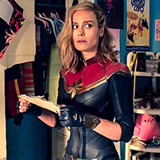

Новости
Провал Marvel? Сборы Капитан Марвел 2 повергли зрителей в шок...
 Это дно? Отзывы критиков о фильме оставляют желать лучшего
О фильме
Капитан марвел 2
Описание:
Кэрол Дэнверс обретает свою отнятую тиранами Крии личность и мстит Высшему Разуму. Это приводят к тому, что Кэрол взваливает на свои плечи бремя дестабилизированной Вселенной. Когда она проходит через червоточину, которая должна вывести её на революционера из числа Крии, её силы переплетаются со способностями Камалы Хан, известной как Мисс Марвел, а также с племянницей Моникой Рамбо. Девушкам придётся научиться работать в команде, чтобы спасти Вселенную
Актеры
- Бри Ларсон
- Тейона Паррис
- Иман Велани
- Семьюель Л. Джексон